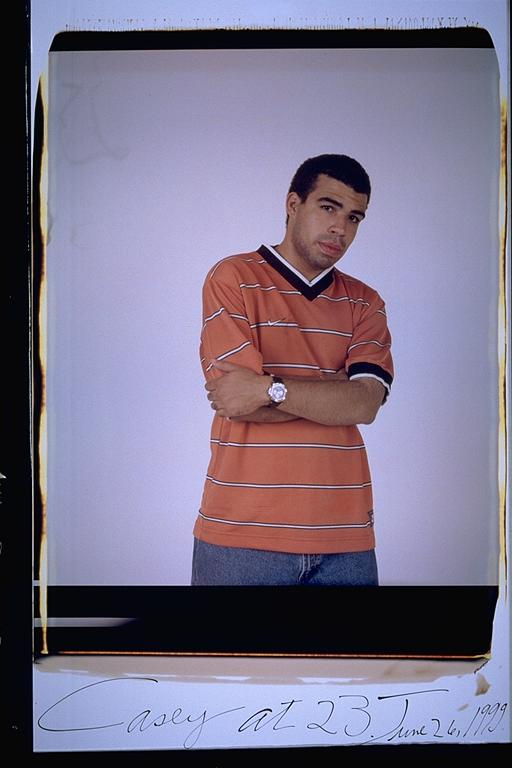

Pals: Boys Who Grew Up Together
elsadorfman.com/pals
Eugene: CASEY:
Mighty Casey, Case in the Place, K-C. Rapper/Intellectual/Producer extraordinaire. Known for smoking, drinking and rappin' up a storm. Casey has a huge ear and is was a child prodigy. It's always the great ones that they think are crazy (i.e., me & you). I KNOW YOU WILL BLOW, stay focused and disciplined, humble yourself to the will of God for your life. I hope that I see you at Church more than just at my wedding and funeral. Thanks for initiating me into the A1 Posse, and introducing me to Gabe & Bismark. You are a genius and don't forget it. I still contend that Casey has a PHOTOGRAPHIC memory, but can still work on his table manners and should get corn rolls. Casey's up to bat, not to bust a ball to bust a rap. He's that ill m@%&*)) with your girl on his lap…. Like a Jamaican playing cricket……white girls…...prank calls ………….egg'n teachers in the COAST, you're too much.
Aldo: Casey really became a good friend of mine when I was in high school. He went to high school with Eugene and Isaac. They were all part of this group, called A-1, representing the struggle of the upper-middle-class oppressed, in the wealthiest of private schools. But they did their job: to keep innocent career-oriented students on their toes, while raising hell for the faculty. And my Casey took the cake, with a snowball incident.

elsad@comcast.net